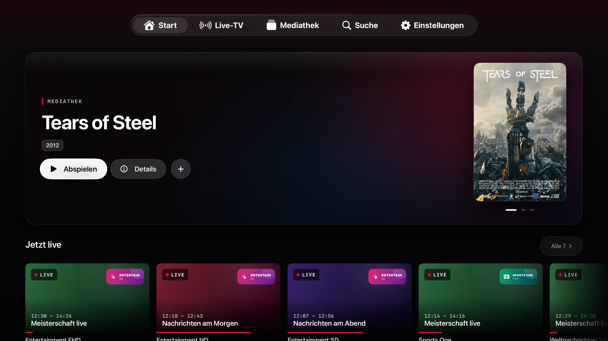
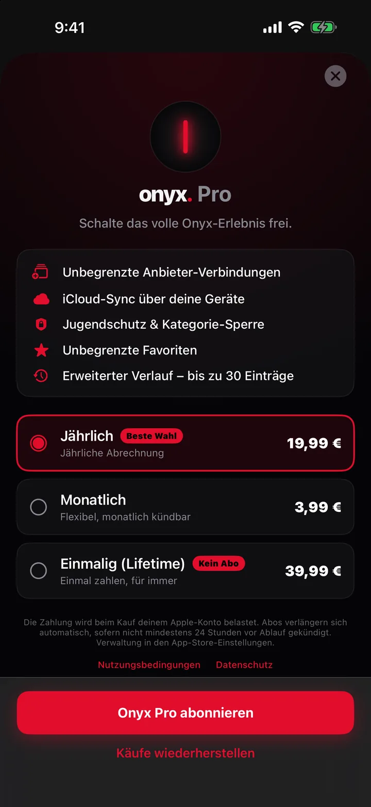

Live-TV, das zeigt, was läuft
Jede Senderzeile trägt die laufende Sendung, einen Live-Fortschrittsbalken und die Restzeit. Favorit markieren, nach Gruppe filtern, die Liste merkt es sich.
IPTV-Player für iPhone, iPad & Apple TV
Onyx ist ein nativer Player für die M3U-Playlist oder den Xtream-Zugang, den du schon hast. Live-TV mit echtem Programmführer, Catch-up, Filme und Serien. Schnell, privat und so gebaut, dass es sich auf jedem Apple-Bildschirm zu Hause fühlt.
Bring deinen eigenen Anbieter mit. Onyx IPTV stellt keine Sender oder Inhalte bereit, hostet nichts und verkauft nichts. Du bist für deine Quellen und die Rechte an allen abgespielten Inhalten verantwortlich.


Ein filmischer Hero, Einstiegstipps, „Weiterschauen“ und die Sender, zu denen du immer wieder zurückkommst. Alles, was dein Anbieter liefert, ohne den Ballast.
Jede Senderzeile trägt die laufende Sendung, einen Live-Fortschrittsbalken und die Restminuten. Favoriten sind einen Tap entfernt, Sendergruppen einen Wisch.
Stunden im Voraus in einem Wisch, eine rote Jetzt-Linie, Titelsuche über alle Sender und Erinnerungen für das, was kommt.
Poster, Staffeln und Episoden, Handlung, Besetzung, Laufzeit und Trailer. Onyx macht dort weiter, wo du aufgehört hast, und spielt die nächste Episode von selbst.
Warum Onyx
Onyx liest, was dein IPTV-Abo ohnehin bereitstellt, und macht daraus eine App, die sich nach iOS anfühlt.
Jede Senderzeile trägt die laufende Sendung, einen Live-Fortschrittsbalken und die Restzeit. Favorit markieren, nach Gruppe filtern, die Liste merkt es sich.
Ein echter TV-Guide mit Jetzt-Linie, Stunden im Voraus in einem Wisch, Suche über alle Sender und Erinnerungen für kommende Sendungen.
Beendete Sendungen aus dem Archiv deines Anbieters ansehen oder eine laufende Sendung von vorn starten.
Poster, Kategorien, Staffeln und Episoden, Handlung, Besetzung und Trailer. Mit „Weiterschauen“ und automatischer nächster Episode.
Nativer AVPlayer für Tempo und Akku, dazu eine VLC-Engine als Fallback für Container, die iOS nicht dekodiert.
Kein Konto, kein Analyse-SDK, kein Tracking. Zugangsdaten liegen im iOS-Schlüsselbund auf deinem Gerät. Der optionale iCloud-Sync bleibt in deiner eigenen iCloud.
Sechzehn Oberflächensprachen und ein Rechts-nach-links-Layout für Arabisch. Dein Guide, deine Einstellungen, deine Worte.
iPhone, iPad & Apple TV
Für jede Plattform in SwiftUI gebaut: eine Touch-App auf iPhone und iPad und eine fokusgesteuerte Apple-TV-App, die Favoriten, Verlauf und das Onyx-Pro-Abo teilt.


Die Apple-TV-App ist ein eigener Download aus demselben App-Store-Eintrag und teilt sich das Onyx-Pro-Abo.
Zwei Minuten bis zum ersten Sender
Onyx erkennt M3U-Links sowie Xtream-get.php- und player_api-URLs und richtet das Konto für dich ein. Erst mal umschauen? Die Demo-Playlist braucht gar keinen Anbieter.
Eine M3U-Playlist-URL oder ein Xtream-Zugang. Füge den Link ein, den dein Anbieter geschickt hat, und Onyx füllt Server, Benutzername und Passwort aus.
Sender in Gruppen sortiert, Filme und Serien getrennt einsortiert, der Guide vom Anbieter oder aus einer XMLTV-Quelle geladen.
Sender antippen, Favoriten markieren, Erinnerungen setzen. Catch-up erscheint von selbst, wo dein Anbieter ein Archiv führt.
Eine Anbieterverbindung, der ganze Guide, Catch-up und die Mediathek sind kostenlos. Pro ergänzt, was Leute mit mehreren Konten oder eine Familie brauchen.
Abos verlängern sich automatisch und werden über deinen Apple Account abgerechnet. Jederzeit in den App-Store-Einstellungen kündbar. Die Preise für deine Region zeigt die App.

Gut zu wissen
Nein. Onyx IPTV ist ausschließlich ein Player. Die App stellt keine Sender, Filme oder Serien bereit, hostet nichts und verkauft keine Inhalte. Du fügst die M3U-Playlist oder den Xtream-Zugang deines eigenen IPTV-Anbieters hinzu und bist für die Rechte an den abgespielten Inhalten verantwortlich.
M3U- und M3U8-Playlists per URL sowie Xtream-Codes-Zugänge (Server-URL, Benutzername, Passwort). Du kannst auch einen get.php- oder player_api-Link einfügen, Onyx richtet das Konto dann selbst ein. EPG-Daten kommen vom Anbieter oder aus einer XMLTV-Quelle.
Ja. Die integrierte Demo-Playlist nutzt öffentliche Teststreams und braucht kein Konto. So kannst du die ganze Oberfläche zuerst ausprobieren.
Die App ist mit einer Anbieterverbindung kostenlos. Onyx Pro ist ein optionales Monats- oder Jahresabo oder ein einmaliger Lifetime-Kauf. Es ergänzt unbegrenzte Verbindungen, iCloud-Sync, Jugendschutz, Qualitätsgruppierung, Bild-in-Bild, AirPlay und Offline-Kopien.
Nein. Es gibt kein Konto, kein Analyse-SDK und kein Tracking. Zugangsdaten bleiben im iOS-Schlüsselbund auf deinem Gerät, der optionale iCloud-Sync läuft über deine eigene iCloud. Siehe Datenschutz.
Prüfe, ob derselbe Stream im vom Anbieter empfohlenen Player läuft, ob Server-URL, Benutzername und Passwort keine Leerzeichen enthalten und ob das Stream-Limit deines Anbieters erreicht ist. Mehr dazu in der Anleitung.
Kostenloser Download. Probier zuerst die Demo-Playlist, deinen Anbieter fügst du hinzu, wann du willst.